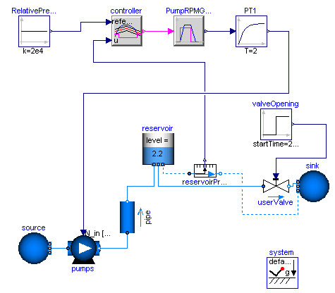
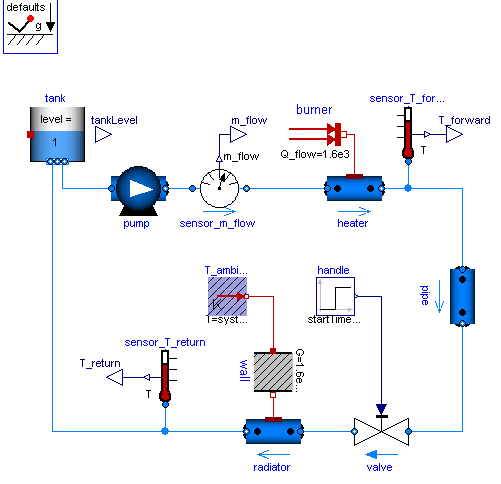
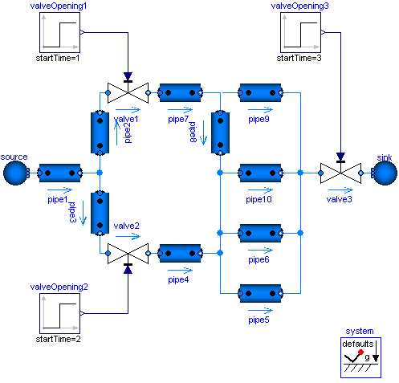
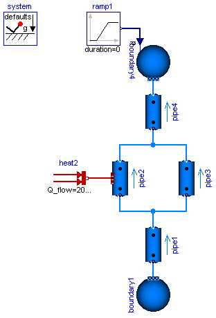
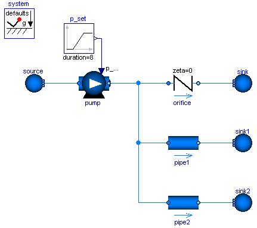

Extends from Modelica.Icons.Library (Icon for library).
| Name | Description |
|---|---|
| Model of a pumping system for drinking water | |
| Simple model of a heating system | |
| Drum boiler example, see Franke, Rode, Krueger: On-line Optimization of Drum Boiler Startup, 3rd International Modelica Conference, Linkoping, 2003 | |
| Library demonstrating the usage of the tank model | |
| Tank system with controller, start/stop/shut operation and diagram animation | |
| Model of the experimental batch plant at Process Control Laboratory at University of Dortmund (Prof. Engell) | |
| IncompressibleFluidNetwork | Multi-way connections of pipes and incompressible medium model |
| BranchingDynamicPipes | Multi-way connections of pipes with dynamic momentum balance, pressure wave and flow reversal |
| Demo of a heat exchanger model | |
| Library demonstrating the usage of trace substances | |
| Demonstrates the parameterization of a pump and a pipe for given nominal values | |
| A set of examples illustrating when special attention has to be paid |
The water controller is a simple on-off controller, regulating on the gauge pressure measured at the base of the tower; the output of the controller is the rotational speed of the pump, which is represented by the output of a first-order system. A small but nonzero rotational speed is used to represent the standby state of the pumps, in order to avoid singularities in the flow characteristic.
Simulate for 2000 s. When the valve is opened at time t=200, the pump starts turning on and off to keep the reservoir level around 2 meters, which roughly corresponds to a gauge pressure of 200 mbar
If using Dymola, turn off "Equidistant time grid" to avoid numerical errors.

Extends from Modelica.Icons.Example (Icon for an example model).
Simple heating system with a closed flow cycle. It is set up for steady-state initial values. After 2000s of simulation time the valve fully opens. A simple idealized control is embedded into the respective components, so that the heating system can be regulated with the valve: the pump controls the pressure, the burner controls the temperature.
One can investigate the temperatures and flows for different settings of system.energyDynamics (see Assumptions tab of the system object). With system.energyDynamics==Types.Dynamics.SteadyState all but one dynamic states are eliminated. The left state tank.m is to account for the closed flow cycle. It is constant as outflow and inflow are equal in a steady-state simulation.
Note that a closed flow cycle generally causes circular equalities for the mass flow rates and leaves the pressure undefined. This is why the tank.massDynamics, i.e. the tank level determining the port pressure, is modified locally to Types.Dynamics.FixedInitial.
Also note that the tank is thermally isolated againts its ambient. This way the temperature of the tank is also well defined for zero flow rate in the heating system, e.g. for valveOpening.offset=0 at the beginning of a simulation. The pipe however is assumed to be perfectly isolated. If steady-state values shall be obtained with the valve fully closed, then a thermal coupling between the pipe and its ambient should be defined as well.
Moreover it is worth noting that the idealized direct connection between the heater and the pipe, resulting in equal port pressures, is treated as high-index DAE, as opposed to a nonlinear equation system for connected pressure loss correlations. A pressure loss correlation could be additionally introduced to model the fitting between the heater and the pipe, e.g. to adapt different diameters.

Extends from Modelica.Icons.Example (Icon for an example model).
| Name | Description |
|---|---|
| replaceable package Medium |
| Name | Description |
|---|---|
| replaceable package Medium |
Normally one would expect bad equation systems in multi-way connections and possibly introduce mixing volumes to work around this. Here the problem is treated with the the modelStructure=av_vb in the DynamicPipe model. Each pipe exposes the states of the outer fluid segments to the respective fluid ports. Consequently the pressures of all connected pipe segments get lumped together into one mass balance spanning the whole connection set. With the stream concept in the fluid ports, the energy and substance balances remain independent in the connected pipe segments.
The model does not contain pressure dynamics as an incompressible medium is used (Essotherm650). Pressure dynamics becomes present with a compressible medium model (e.g. StandardWater).

Extends from Modelica.Icons.Example (Icon for an example model).
| Name | Description |
|---|---|
| replaceable package Medium |
| Name | Description |
|---|---|
| replaceable package Medium |
This model demonstrates the use of distributed pipe models with dynamic energy, mass and momentum balances. At time=2s the pressure of boundary4 jumps, which causes a pressure wave and flow reversal.
Change system.momentumDynamics on the Assumptions tab of the system object from DynamicFreeInitial to SteadyState, in order to assume a steady-state momentum balance. This is the default for all models of the library.
Change the Medium from MoistAir to StandardWater, in order to investigate a medium with significantly different density. Note the static head caused by the elevation of the pipes.
Note, pipe4.modelStructure = av_b, i.e., the pipe has no volume at port_b. It is not possible to have a volume at port_b, since otherwise the pressure of the volume is defined by the connected boundary source. This in turn means that the derivative of the pressure of the boundary source is needed, since the volume requires this derivative. It is, however, not possible to compute this derivative because the input pressure is changing disontinuously and its derivative would be a dirac impulse.

Extends from Modelica.Icons.Example (Icon for an example model).
| Name | Description |
|---|---|
| replaceable package Medium |
| Name | Description |
|---|---|
| replaceable package Medium |
A pump, an orifice and two pipes are parameterized with simple nominal values. Note that pipe1 and pipe2 use the flowModel NominalTurbulentFlow and NominalLaminarFlow, respectively, which do not require the specification of geometry data. Instead pathLengths_nominal are obtained internally for given nominal pressure loss and nominal mass flow rate.
The pump controls a pressure ramp from 1.9 bar to 2.1 bar. This causes an appropriate ramp on the mass flow rate of the orifice, which has a boundary pressure of 1 bar. Flow reversal occurs in the pipes, which have a boundary pressure of 2 bar. The Command plotResults can be used to see the pump speed N, which is controlled ideally to obtain the pressure ramp. Moreover the internally obtained nominal design values that fulfill the nominal operating conditions as well as the Reynolds number, m_flows_turbulent, and dps_fg_turbulent are plotted.
Note that the large value for pipe2.flowModel.pathLengths_nominal[1] is only meaningful under the made assumption of laminar flow, which is hardly possible for a real pipe.
Once the geometries have been designed, the NominalTurbulentPipeFlow correlations can easily be replaced with TurbulentPipeFlow or DetailedPipeFlow correlations. Similarily the ControlledPump can be replaced with a PrescribedPump to investigate a real controller or with a Pump with rotational shaft to investigate inertia effects.

Extends from Modelica.Icons.Example (Icon for an example model).
| Name | Description |
|---|---|
| replaceable package Medium |
| Name | Description |
|---|---|
| replaceable package Medium |